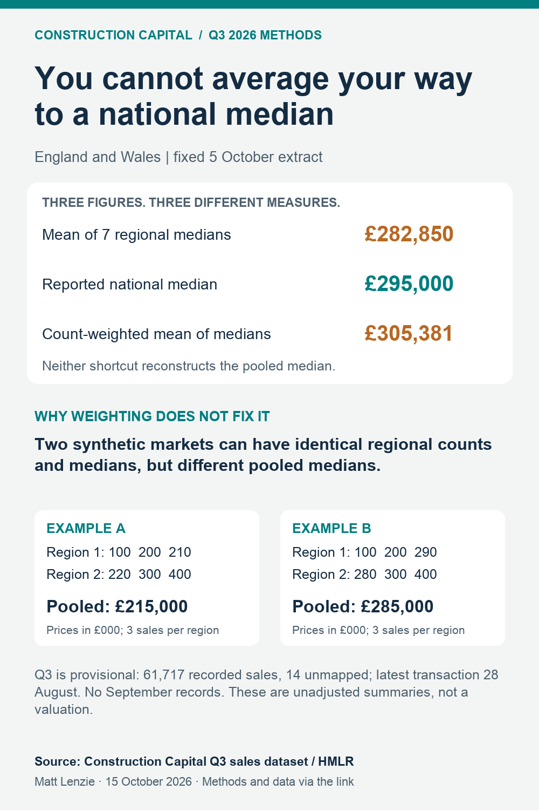

Why regional house-price medians cannot be averaged
Matt Lenzie | Construction Capital | 15 October 2026 | CC-DF-2026Q3-V03, version 1.0
A national median is a statement about the middle of a pooled set of prices. Regional medians describe the middle of each regional set. Averaging those summaries, even after weighting by transaction counts, cannot generally recover the pooled median.
In our frozen Q3 extract, the reported England and Wales median is £295,000. Weighting the seven regional medians by their recorded transaction counts produces £305,381, a difference of £10,381, or 3.52%. That weighted figure is a summary of regional medians. It is neither the national median nor the mean transaction price.
Reported national median
Equal mean of regional medians
Count-weighted mean of medians
Read the vintage correctly. These are category A Price Paid records in the 5 October 2026 release, grouped by transaction quarter. Q3 contains 61,717 recorded sales; its latest transaction is 28 August and September is absent. It is a provisional, incomplete extract, not a completed-quarter price index. Fourteen Q3 records have no regional mapping.
Same regional summaries, different pooled medians
The following synthetic example isolates the mathematical issue. These are invented teaching values, not observed house sales. Each region has three observations. Both examples have regional medians of £200,000 and £300,000, so both the equal and count-weighted averages of medians are £250,000.
| Example | Region 1 prices (£000) | Region 2 prices (£000) | Pooled median |
|---|---|---|---|
| A | 100, 200, 210 | 220, 300, 400 | £215,000 |
| B | 100, 200, 290 | 280, 300, 400 | £285,000 |
Pooling A puts £210,000 and £220,000 in the middle. Pooling B puts £280,000 and £290,000 there. Counts and regional medians are identical, yet the pooled median differs by £70,000. Those summaries alone do not contain enough information to determine the national result.
What the Q3 regional inputs actually contain
The seven custom groups account for 61,703 of the 61,717 national records. The calculation uses each group's published median and recorded count from the Q3 housing sales, registration lag and mix dataset. Do not add the national row to the regional rows, because they overlap.
| Custom geography | Recorded sales | Source median |
|---|---|---|
| East of England | 7,262 | £340,000 |
| London & South East | 16,817 | £425,000 |
| Midlands | 10,994 | £255,000 |
| North East & Yorkshire | 8,618 | £200,000 |
| North West | 7,567 | £229,950 |
| South West | 7,351 | £310,000 |
| Wales | 3,094 | £220,000 |
The London and South East Q3 market review supplies the wider regional context. Our separate sales-mix comparator examines changes in the mix of recorded property types. A changing mix is another reason to avoid treating an unadjusted median as constant-quality price growth.
Fifteen quarterly checks, without cherry-picking
Below are every quarter available in the frozen table, from Q1 2023 to Q3 2026. Values are rounded to the nearest pound for display; the download retains unrounded calculations. Across these 15 observations, the count-weighted regional summary exceeds the retained national median each time. This pattern describes this extract; it is not a universal rule or a correction factor.
Open all 15 quarterly comparisons
| Quarter | Source national median | Equal mean of medians | Count-weighted mean of medians | Unmapped records |
|---|---|---|---|---|
| 2023-Q1 | £284,000 | £271,356 | £294,732 | 13 |
| 2023-Q2 | £285,000 | £274,643 | £295,815 | 15 |
| 2023-Q3 | £294,995 | £281,071 | £306,694 | 29 |
| 2023-Q4 | £285,000 | £276,263 | £297,918 | 29 |
| 2024-Q1 | £280,000 | £269,857 | £293,563 | 25 |
| 2024-Q2 | £289,825 | £278,535 | £301,431 | 34 |
| 2024-Q3 | £300,000 | £286,064 | £311,810 | 50 |
| 2024-Q4 | £297,500 | £285,000 | £307,136 | 56 |
| 2025-Q1 | £315,000 | £291,679 | £321,355 | 59 |
| 2025-Q2 | £275,000 | £274,707 | £289,833 | 42 |
| 2025-Q3 | £300,000 | £289,285 | £312,840 | 52 |
| 2025-Q4 | £295,000 | £285,071 | £305,308 | 49 |
| 2026-Q1 | £290,000 | £279,643 | £300,771 | 46 |
| 2026-Q2 | £285,000 | £278,214 | £298,262 | 40 |
| 2026-Q3 | £295,000 | £282,850 | £305,381 | 14 |
How the calculation works
For each quarter, the equal shortcut is sum(regional medians) / 7. The weighted shortcut is sum(regional count × regional median) / sum(regional count). The denominator includes only mapped regional records. A pooled median requires the ordered underlying prices, or sufficient equivalent distribution information.
We retain the source's national median and do not independently reconstruct it. Differences from the shortcuts cannot be attributed entirely to aggregation: geographic coverage differs slightly, and source medians may be rounded. The synthetic example establishes the information loss separately, with complete coverage and exact values. No inference about the missing prices, causal effects or statistical significance is made.
Why this matters for development finance
A regional summary can frame an appraisal discussion, but substituting an average of medians for project-specific sales evidence changes the measure being used. For readers considering how sales evidence fits a funding proposal, Construction Capital's Development Finance guide provides the commercial service context. The calculations here do not establish a scheme's valuation, gross development value or available borrowing.
Download and reproduce
Download the complete source, derived data and Python package. Run python reproduce.py --output reproduced after extracting it. Python 3's standard library is sufficient; the script reconciles every quarterly mapping count and checks both synthetic examples.
- 15-quarter comparison CSV
- Seven Q3 regional inputs
- Synthetic counterexample CSV, clearly separate from market data
- Unchanged 120-row source table and 15-row mapping coverage table
- Provenance, source checksums and interpretation
- Download the visual

